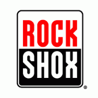
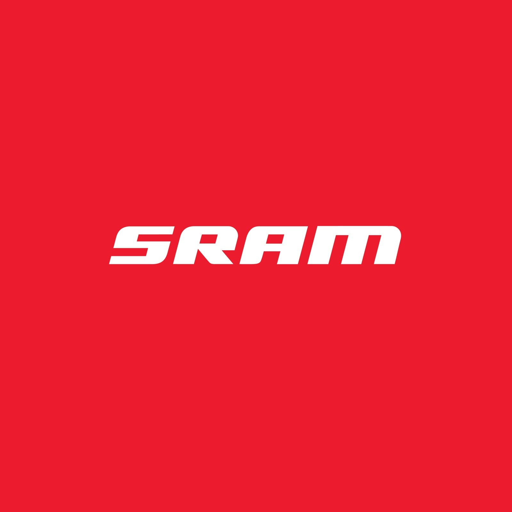
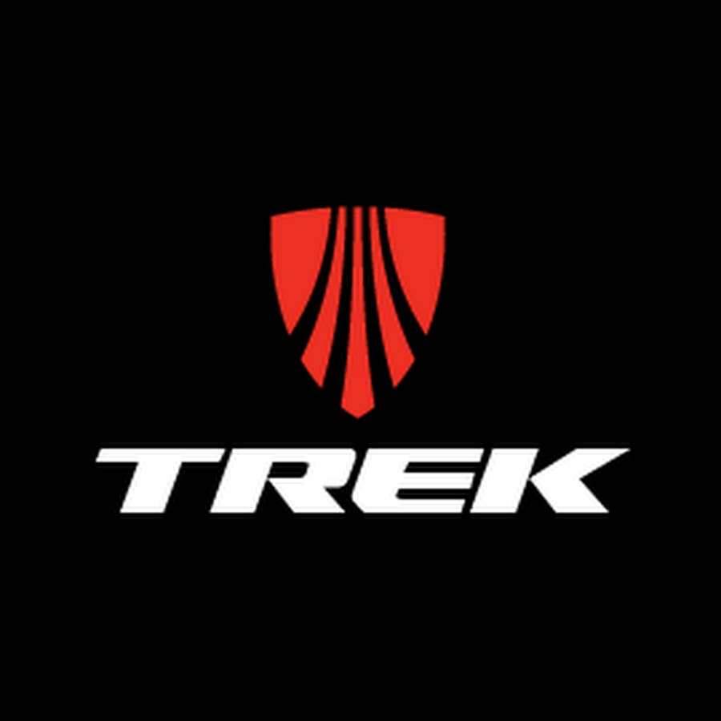

Lista firm, które polecamy z autopsji:
Kross - Polska firma z branży sportowej zajmująca się produkcją rowerów oraz ram rowerowych. Osobiście korzystam z roweru tej firmy i goooorąco polecam modele, z którymi miałem styczność czyli linię B modele od 6 w zwyż oraz linię moon :).
Rock Shox - Amerykańska firma, obecnie jedna z dwóch największych zajmujących się produkcją zawieszenia rowerowego od 1989( aktualnie należy do SRAMa). Wraz z Wojtkiem używamy amortyzatorów tej firmy i jesteśmy z nich bardzo zadowoleni.

Fox - Druga największa firma produkująca zawieszenie. Amortyzator tej firmy ma "Kazek" i gorąco go poleca. Chociarz dużo się słyszy że ostatnie modele z działu budżetowego bardzo cierpią na swoją sztywność.
Sram - korporacja produkująca osprzęt rowerowy, pod względem wielkości druga na świecie, zaraz po Shimano. Powstała w 1987 roku w Chicago. Jednej z grup napędowych tej firmy używa "Dodeł" i bardzo sobie ją chwali.

Schwalbe - Jeden z wielu znanych koncernów na świecie produkujących ogumienie, nie tylko do rowerów. Aktualnie używam opon tej firmy i dętki, odkąd wykrzywiłem tylną obręcz i nie mogę korzystać z bezdętki.
Trek - Jeden z największych światowych producentów ram i rowerów. Pochodzi z Ameryki. Jego ramy wyróżniają się, w przeciwieństwie do specializeda, prostotą połączenia rur i harmonią. Wojtek i "Kazek" kochają ich ramy.

")